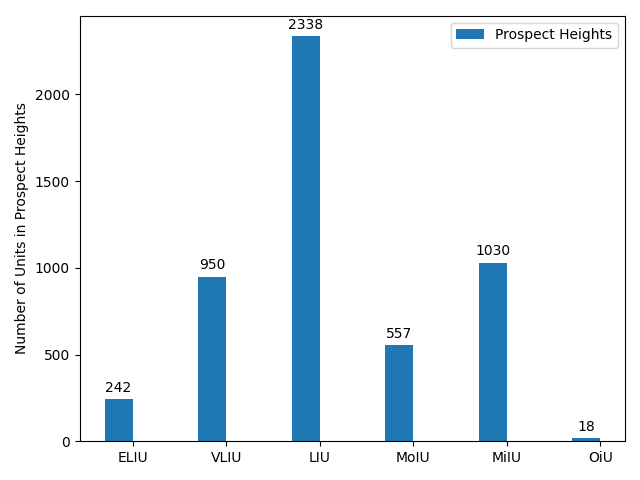
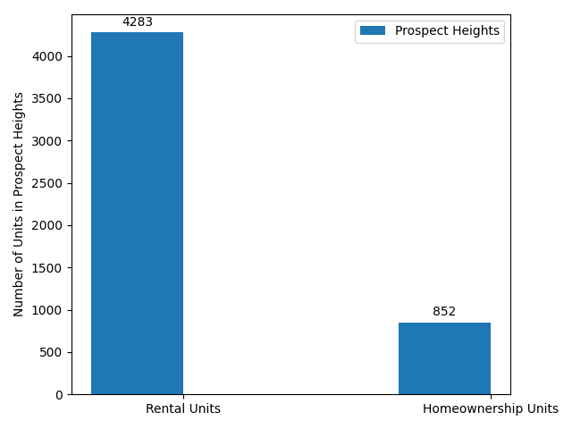
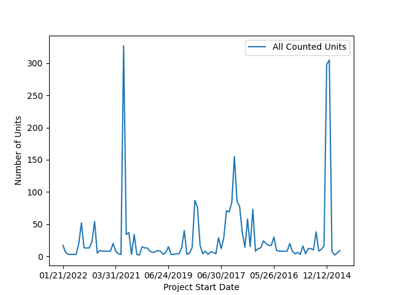

Affordable Housing Project
CS 12700
MHC 2022 Fall
INTRODUCTION TO MY NEIGHBORHOOD
With Brooklyn’s rent prices increasing and there being a simultaneous shortage of available apartments, landlords are offering fewer concessions in 2022 than they have in previous years. Based on this trend, current renters can expect to be presented with lease renewals with major price increases. Specifically, StreetEasy revealed the average one bedroom, one bathroom apartment in Prospect Heights to cost between $3,412 to $4,000 per month, indicating a 24% increase from the previous year. Moreover, only 21,863 units were available for rent at the start of 2022 in Brooklyn, whereas the first quarter of 2021 offered 42,055 rentals (Patch). For context, in 2021, rent prices significantly decreased and units had high availability because of a shift in market dynamics during the pandemic (StreetEasy). With 68% of Prospect Heights being occupied by renter households, residents should consider how they will be negatively affected by these rent increases, in addition to paying utility expenses, maintenance costs, and upholding amenities.
Our group favors Niche’s rankings. Some of these metrics, such as the type of population, jobs and commutes, and public education are extremely important to residents, but are overlooked by other ranking systems. Niche’s system is the most holistic and well-rounded.
Certain qualities that make neighborhoods a desirable place for affordable housing include their cost of living, walkability, proximity to public transportation, and access to high quality schools. Community involvement and resources, diversity, low crime / safety rates, weather, and green spaces also enhance the quality of a neighborhood. Ultimately, our group concluded that walkability, cost of living, and low crime / safety rates would be the most important factors for us in determining advantageous locations for affordable housing in our neighborhoods: Brownsville, Prospect Heights, Sheepshead Bay, and Sunset Park.
According to Niche:
Metric for walkability / access to public transit: A-
Cost of living: C-
Niche presents a $100,568 to $2,020 ratio, while Brownsville’s is $33,380 to $947. Though the income to rent ratio may make the “cost of living” ranking for these neighborhoods seem identical, residents’ quality of life varies based on their proximity to public transit, education, and neighborhood politics. For this reason, our group decided to compare our neighborhoods based on median household incomes.
Level of crime / safety rates: B-
The characteristic we chose to analyze between our 4 neighborhoods was median household income. Using this metric, we could get a picture of how expensive it might be to live in each neighborhood and how desirable government affordable housing programs might be. The median household income for Brooklyn as a whole in 2020 was $67,000. Using this statistic as a baseline to compare our neighborhoods, two are roughly on par with the borough median and two are extreme outliers. Households in Sunset Park and Sheepshead Bay have slightly higher than average median incomes at $71,000 and $73,000 respectively. Prospect Heights, a historically affluent neighborhood, has a high median household income at $111,000 and Brownsville, one of the poorest neighborhoods in the city, has the lowest median household income of the bunch at $26,000.
A highlighted map of Prospect Heights.

The first analysis will consist of creating a table with an accompanied key detailing the number of various units based on income types in Prospect Heights. The major difference in the number of units for each category is accounted for by the total of the two zipcodes' units. For clarity, the bar graph combines all of the ELIU values from 11217 and 11238 to produce a sum of the ELIU units in Prospect Heights. This algorithm follows for all the remaining unit types.
Housing unit numbers based on incomes.

Although Prospect Heights (amongst these four neighborhoods) is considered to be a relatively high-income neighborhood, the prevalence of low income units can be attributed to its demographic. To elaborate on this point, approximately 30% of Prospect Heights residents are aged 25 or younger. Additionally, another 13% of the residents are 65 and older. Furthermore, this age group is associated with an average income of roughly 57,000 dollars. Considering that a low-income family in America is typically defined as one living off of a net income of approximately $58,000 per year, these statistics provide the rationale for the skew in income unit data, even in this supposedly "high-income" Brooklyn neighborhood.
Comparison between number of rented vs. household units.

There is a substantially greater amount of rented units as opposed to home-owned units. Based on the statistics from HC2, there were 10,415 occupied housing units in Prospect Heights, of which 30.42% were owner-occupied, while 69.57% had renters living in them.
A graph of the project dates for affordable housing construction.
Specific to "All Counted Units" in the data set, the above code creates statements that relay the amount of rentals and home-ownership units there are in zipcode 11217 and in 11238. The following code derives that 11217 consisted of 90.51% rented units and 9.49% home units. Similarly, in 11238, 78.08% of the units were rented, whereas the remaining 21.92% were home-owned units. Whereas the second zipcode presents a greater difference in the rental to homeowner ratio, the data is still indicative of the dominant ratio of renters in Prospect Heights. Lastly, with the plot graph indicating the amount of affordable housing projects that have begun construction (during the time frame of this dataset), we learn of the constant demand for this resource. Consequently, we are open to anaylze how the future rental/homeowner ratio may change as well as what type of rental units will become the most affordable based on residents' wages. The trends of the plots' shape can be related back to the economic market of that year, as this impacts whether or not developers invest in affordable housing projects.
A graph of the project dates for affordable housing construction.

Evidently, there are some large and consistent dips prior to 2015 in the 11217 zipcode. However, the spikes in project building in 2015 (in the 11217 zipcode) and 2021 (in the 11238 zipcode) suggest that new affordable units are being built to house more people in Prospect Heights. When evaluated alongside preservation vs. construction data, one can learn of the type of improvements occuring in the neighborhood and the dates during which they are expected to be completed.